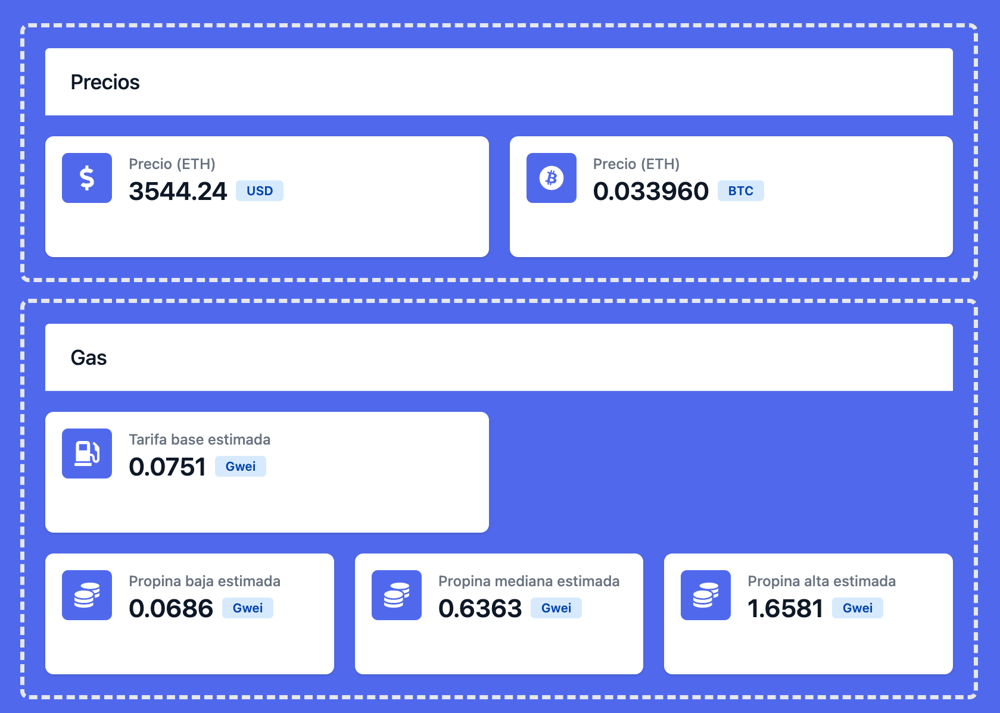
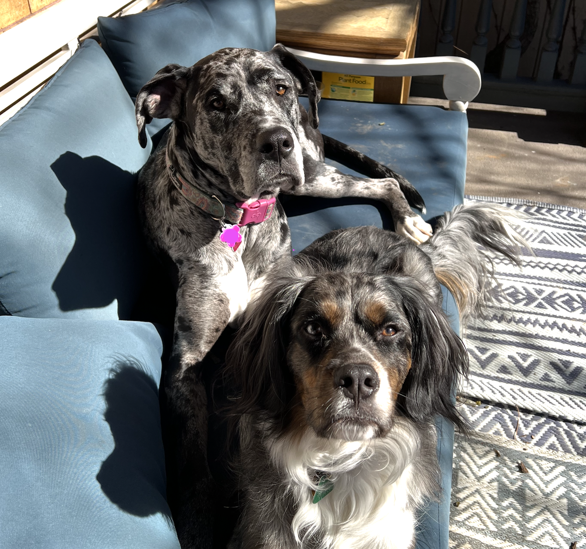
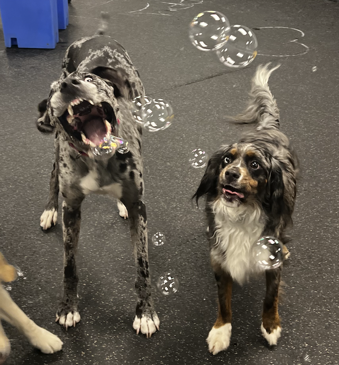

About
Intro Link to heading
Hi, I’m Juan, a software engineer who loves working on backend systems. I mostly work using Go, Postgresql and Kafka but I enjoy exploring new technologies, especially those that simplify solutions for whatever problem I’m trying to tackle at the moment. Originally from Caracas, Venezuela, I’m now a US citizen who’s always up for learning new things.
Projects Link to heading
-
NIStudies fMRI neuroimaging studies explorer. Built with using FastAPI and NextJS.

-
ETHEsp small blog and dashboard discussing Ethereum concepts in Spanish. Built with NextJS. 
-
SFDCClient golang package consisting of a wrapper of an HTTP client, for making requests to salesforce’s REST API through a connected app, making use of the Salesforce OAuth 2.0 JWT Bearer Flow for Server-to-Server authorization flow.
Dogs Link to heading

